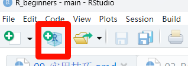

print("rmarkdown演示")
## [1] "rmarkdown演示"12 实用技巧
一定要结合配套视频一起看！
12.1 Rmarkdown和quarto
如果你不了解markdown，请跳过这部分内容，先去学习markdown，非常简单，10分钟就能学会。
R script 如果要写注释（即一些解释说明的文字）的话，需要在前面加#，但是Rmarkdown不需要。你可以直接在当前界面写各种文字、符号等。
插入代码块的快捷键：ctrl+alt+i
括号中可以写各种控制选项。
quarto和Rmarkdown没有本质区别（只是后缀名不一样而已），各种语法都可以互认，只是posit（rstudio母公司）现在更喜欢quarto而已。
12.2 用Rproject管理代码
.Rproj在哪里，你的当前工作路径就在哪里，只需要双击.Rproj文件打开rstudio即可。
如何创建.Rproj，点击左上角的那个图标即可：

12.3 bioconductor镜像管理
通过修改.Rprofile文件可以实现超多的自定义内容。比如，设置每次打开rstudio时打印“你好，阿越！欢迎你”
运行以下代码打开.Rprofile文件，并把以下代码粘贴进去，保存，关闭文件即可。
usethis::edit_r_profile()print("你好，阿越！欢迎你")
## [1] "你好，阿越！欢迎你"通过这种方法也可以实现永久修改bioconductor镜像，这样就不用每次都运行修改镜像的代码了：
# 西湖大学的镜像
options(BioC_mirror="https://mirrors.westlake.edu.cn/bioconductor")或者也可以把你每次都想加载的R包加进去，这样每次在打开rstudio时都会自动帮你加载，不用手动加载。
12.4 R包安装和管理
在rstudio中可以通过点点点安装CRAN的R包，可以在packages面板查看安装的R包和版本等
BiocManager::install()可以安装CRAN、bioconductor、github的R包。
xxx.db包的安装。
12.5 修改默认R包安装路径
如何查看你的R包的默认安装路径：
- 方法1：在packages面板查看R包默认安装路径
- 方法2：使用
.libPaths()
.libPaths()
## [1] "C:/Users/liyue/AppData/Local/R/win-library/4.4"
## [2] "C:/Program Files/R/R-4.4.1/library"第1个是你自己安装R包时的默认路径。
如何更改？直接在.libPaths()中添加即可，记得把你想要的路径放在第一位：
.libPaths(c("F:/r_pkg_test", .libPaths()))
.libPaths()但这种方法在你重启rstudio后会失效，可以重启下看看。
永久修改的方法是把上面的代码加在.Rprofile文件中。运行以下代码打开.Rprofile文件，把上面的代码粘贴进去，保存，关闭即可。你再重启rstudio发现路径没变。
usethis::edit_r_profile()还可以修改Rprofile.site，较复杂，不演示。
此时可以安装下R包试试看：
BiocManager::install("ggraph")看看安装路径，是不是多了这个包。
加载试试：
library(ggraph)12.6 R自带数据集
自带数据集都在datasets包中，这个是R自带的，不需要自己安装：
# 著名的mtcars数据
datasets::mtcars
## mpg cyl disp hp drat wt qsec vs am gear carb
## Mazda RX4 21.0 6 160.0 110 3.90 2.620 16.46 0 1 4 4
## Mazda RX4 Wag 21.0 6 160.0 110 3.90 2.875 17.02 0 1 4 4
## Datsun 710 22.8 4 108.0 93 3.85 2.320 18.61 1 1 4 1
## Hornet 4 Drive 21.4 6 258.0 110 3.08 3.215 19.44 1 0 3 1
## Hornet Sportabout 18.7 8 360.0 175 3.15 3.440 17.02 0 0 3 2
## Valiant 18.1 6 225.0 105 2.76 3.460 20.22 1 0 3 1
## Duster 360 14.3 8 360.0 245 3.21 3.570 15.84 0 0 3 4
## Merc 240D 24.4 4 146.7 62 3.69 3.190 20.00 1 0 4 2
## Merc 230 22.8 4 140.8 95 3.92 3.150 22.90 1 0 4 2
## Merc 280 19.2 6 167.6 123 3.92 3.440 18.30 1 0 4 4
## Merc 280C 17.8 6 167.6 123 3.92 3.440 18.90 1 0 4 4
## Merc 450SE 16.4 8 275.8 180 3.07 4.070 17.40 0 0 3 3
## Merc 450SL 17.3 8 275.8 180 3.07 3.730 17.60 0 0 3 3
## Merc 450SLC 15.2 8 275.8 180 3.07 3.780 18.00 0 0 3 3
## Cadillac Fleetwood 10.4 8 472.0 205 2.93 5.250 17.98 0 0 3 4
## Lincoln Continental 10.4 8 460.0 215 3.00 5.424 17.82 0 0 3 4
## Chrysler Imperial 14.7 8 440.0 230 3.23 5.345 17.42 0 0 3 4
## Fiat 128 32.4 4 78.7 66 4.08 2.200 19.47 1 1 4 1
## Honda Civic 30.4 4 75.7 52 4.93 1.615 18.52 1 1 4 2
## Toyota Corolla 33.9 4 71.1 65 4.22 1.835 19.90 1 1 4 1
## Toyota Corona 21.5 4 120.1 97 3.70 2.465 20.01 1 0 3 1
## Dodge Challenger 15.5 8 318.0 150 2.76 3.520 16.87 0 0 3 2
## AMC Javelin 15.2 8 304.0 150 3.15 3.435 17.30 0 0 3 2
## Camaro Z28 13.3 8 350.0 245 3.73 3.840 15.41 0 0 3 4
## Pontiac Firebird 19.2 8 400.0 175 3.08 3.845 17.05 0 0 3 2
## Fiat X1-9 27.3 4 79.0 66 4.08 1.935 18.90 1 1 4 1
## Porsche 914-2 26.0 4 120.3 91 4.43 2.140 16.70 0 1 5 2
## Lotus Europa 30.4 4 95.1 113 3.77 1.513 16.90 1 1 5 2
## Ford Pantera L 15.8 8 351.0 264 4.22 3.170 14.50 0 1 5 4
## Ferrari Dino 19.7 6 145.0 175 3.62 2.770 15.50 0 1 5 6
## Maserati Bora 15.0 8 301.0 335 3.54 3.570 14.60 0 1 5 8
## Volvo 142E 21.4 4 121.0 109 4.11 2.780 18.60 1 1 4 2
# 或者
data("mtcars")有很多R包都是自带数据集的，不用额外下载，只要安装了这个R包就能用。比如survival包里面，就有很多可用于做生存分析的数据：
library(survival) # 加载这个R包就能用里面的数据了
## Warning: package 'survival' was built under R version 4.4.2
str(lung)
## 'data.frame': 228 obs. of 10 variables:
## $ inst : num 3 3 3 5 1 12 7 11 1 7 ...
## $ time : num 306 455 1010 210 883 ...
## $ status : num 2 2 1 2 2 1 2 2 2 2 ...
## $ age : num 74 68 56 57 60 74 68 71 53 61 ...
## $ sex : num 1 1 1 1 1 1 2 2 1 1 ...
## $ ph.ecog : num 1 0 0 1 0 1 2 2 1 2 ...
## $ ph.karno : num 90 90 90 90 100 50 70 60 70 70 ...
## $ pat.karno: num 100 90 90 60 90 80 60 80 80 70 ...
## $ meal.cal : num 1175 1225 NA 1150 NA ...
## $ wt.loss : num NA 15 15 11 0 0 10 1 16 34 ...
str(colon)
## 'data.frame': 1858 obs. of 16 variables:
## $ id : num 1 1 2 2 3 3 4 4 5 5 ...
## $ study : num 1 1 1 1 1 1 1 1 1 1 ...
## $ rx : Factor w/ 3 levels "Obs","Lev","Lev+5FU": 3 3 3 3 1 1 3 3 1 1 ...
## $ sex : num 1 1 1 1 0 0 0 0 1 1 ...
## $ age : num 43 43 63 63 71 71 66 66 69 69 ...
## $ obstruct: num 0 0 0 0 0 0 1 1 0 0 ...
## $ perfor : num 0 0 0 0 0 0 0 0 0 0 ...
## $ adhere : num 0 0 0 0 1 1 0 0 0 0 ...
## $ nodes : num 5 5 1 1 7 7 6 6 22 22 ...
## $ status : num 1 1 0 0 1 1 1 1 1 1 ...
## $ differ : num 2 2 2 2 2 2 2 2 2 2 ...
## $ extent : num 3 3 3 3 2 2 3 3 3 3 ...
## $ surg : num 0 0 0 0 0 0 1 1 1 1 ...
## $ node4 : num 1 1 0 0 1 1 1 1 1 1 ...
## $ time : num 1521 968 3087 3087 963 ...
## $ etype : num 2 1 2 1 2 1 2 1 2 1 ...